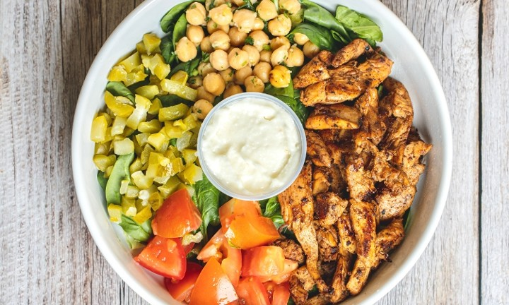

Chicken Salad Bowl

Description
This is a chicken salad bowl, courtesy of Barbonzai Lebanese Eatery.
It is the most popular item and features grilled chicken breast
atop a spinach or romaine lettuce base. Comes with tomatoes,
garlic garbanzo beans, diced pickles and homemade garlic sauce!
A delicious treat
Ingredients needed:
- Chicken Breast
- Tomatoes
- Canned Garbanzo beans
- Pickles
- Lettuce
- Spinach
- Various secret spices
- Garlic sauce
Instructions:
- Buy garlic sauce from the restaurant Most important step!
- Generously spice the chicken breast
- Thinly slice the chicken breast and grill for ~10 minutes
- Dice tomatoes and pickles
- Drain garbanzo beans, rinse with water then coat with garlic sauce
- Chop lettuce and spinach and place into bowl
- Add the rest of the ingredients and enjoy!